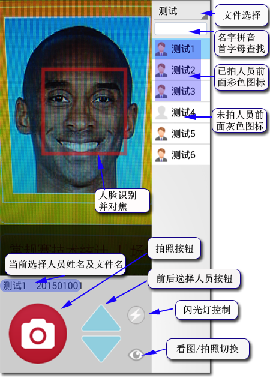

界面操作说明

软件特点
1、自动以指定名字作为相片文件名。
2、拍照时自动检测人脸位置，并以脸部对焦。
3、预设的文件名如果有重复，则相片文件名自动加“_1(2,3...)”后缀，保证不覆盖已有相片。
4、可输入名字拼音首字母查找，快速定位拍摄对象。
5、可同时保存未缩小未压缩的大图，供后期有需要时用。
6、生成证件照时采用平均取值算法，减少相片锯齿现象。
7、双指在预览区放大缩小可调节变焦。
7、可临时输入相片文件名拍摄。
8、可编辑名单文件。
9、可调节拍摄时相机的对比度、亮度。
参数设置说明
1、保存图像大小：就是最终生成相片的尺寸。
2、图像保存质量：生成JPG文件质量，一般设为100以获得好相片，但有些场合要限制文件大小（如广东高考报名相片要求10K以内），此时可以设置小于100，生成的文件会小些。
3、是否生成大图文件：如果有需要，可以选中，会同时保存未缩小的图像文件。相片保存位置：内置存储卡bmCamera下同名文件夹，如当前选“高一1班”，则相片保存在bmCamera里面的“高一1班”文件夹里，而大图则保存在“高一1班L”文件夹里。
4、软件激活：软件以手机号码注册，请先在淘宝购买软件，购买时一定要留言，写上手机号码，然后等待我们加入注册系统，我们加入后会以短信通知。然后点击“软件激活”，输入留言的手机号码按确定即可。激活时需要访问互联网，所以请打开手机网络。
准备名单数据
软件只需要2列数据
姓名：显示在列表中
文件名：相片以此作为文件名保存
1、先在EXCEL或WPS中输入数据，按上面格式。需要注意姓名中间可以有空格，但文件名不要有空格隔开
2、打开WINDOWS自带记事本，把内容复制到记事本中（不要复制标题）。
3、把保存好的文本文件复制到手机内置存储卡“bmCamera”文件夹。
4、打开软件，即可在文件列表中选择放入的文件。
常见问题
部分使用MTP传输协议的手机连接电脑后，看不到软件生成的文件（手机MTP协议问题），造成无法复制文件，此时请使用手机助手类软件，如腾讯应用宝、百度手机助手、豌豆荚等等都可以。
意见反馈
如果在使用过程中出现问题或者有好的建议请告知我们，可以使用如下方式，谢谢。
1、直接在软件“参数设置”的“意见反馈”中发给我们。
2、访问我们的微博，
点击进入。
3、百度空间也会发布操作说明等。
点击进入。
4、QQ联系，QQ号码：86813184